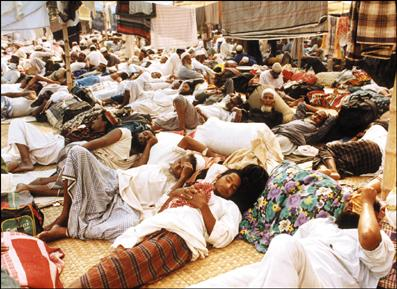

|
"Biswa Ijtema !" |
||||||||
|
Every year, Bangladesh’s Tablig Al Jamaat hosts religiously a religious program calling it Bishwa Ijtema - a hybrid term, half Sanskrit, half Arabic. As far as Ijtema is concerned, this year is no exception. The program that is intended to rejuvenate Islamic ideals among Bangladesh’s 114 million Muslims starts this year on December 13 that is going to continue until December 15 with its usual Akheri Munazat (Final Supplication). If last year’s reporting of the event is any guide, the newspapers will be printing not only the accounts of the program, they will also publish all kinds of photos. All these photos that appear here are from last year’s Ijtema and were taken from the electronic versions of newspapers such as The Observer and The Daily Star, and the AP. Most newspapers published from Dhaka are into this game of projecting the number of devotees that we endearingly call the Musullis. The number that we read in the newspapers for this year’s Ijtema ranged from 1 to 2 million for the first two days. The projection for the last day when Akheri Munazat or Final Supplication will be performed ranged anywhere between 2 to 3 million devotees. This is true that Bangladesh’s Allah-fearing Muslims would cut corners by not attending the first two-days event and they will throng for the Ijtema ground en masse on Friday (December 15) to receive all the blessings from Allah by joining the Akheri Munazat. I personally think it is a charade of monumental proportion. Bangladesh is a predominantly Muslim nation with about 88% of her people being Muslims. That would translate about 114 million Muslims. Therefore, the ranking of Bangladesh would be the fourth largest nation to have Muslims after Indonesia, Pakistan, and India. Nonetheless, this nation does not behave like a Muslim Ummah (community) because in terms of corruption and crime it heads the list. If the people of Bangladesh had taken the religion Islam seriously, then the crime rate and the rampant corruption would be way down. Consequently, the nation would be spared from the shame of being known as the nation of thieves and unscrupulous office workers and politicians. Therefore, going to Bishwa Ijtema to receive blessing from Allah for Akherat or afterworld does not make any sense. Period. That is the sole reason why this scribe thinks that we should label the event simply as a charade. Most newspapers has written that this is the 38th year running of Bishwa Ijtema, the one Bangladesh’s Tablig Al Jamaat had been hosting year after year. This is true. While we were attending high schools in early sixties, we were aware that in Ramna’s Kakrail Mosque some religious minded folks from all 17 districts of erstwhile East Pakistan used to gather in the drier winter months to listen to reputed Maulanas from Deoband and other reputed madrassahs. They would participate in Tafsir, Boyan, etc., to know the inner meaning of certain suras. To my knowledge, this event was so small that even the newspaper in those days would hardly paid any attention to the gatherings of scant Musullis in Kakrail Mosque. However, Bishwa Ijtema has come a long way since those days of early sixties. The Saudi influence was there but no one really noticed in the early days. The Ijtema program was becoming bigger and bigger going into the seventies. Finally, the venue was shifted from Kakrail Mosque to Tongi, which is about 10 miles to the north of Dhaka. In the late seventies, the movement got a shot in the arm by the blessings of Bangladesh’s military government. This scribe used to visit Bangladesh very frequently in the winter months in those years. The memory of busload of people going to Tongi on Ijtema day is still fresh in my mind. The evening TV news used to show a “pious” Gen. Ziaur Rahman sitting in the front row sporting his Rayban glass and looking very somber. Later, the other charlatan General who ruled Bangladesh with an iron grip also used to be a permanent fixture at the Bishwa Ijtema. Everyone played the game of charade while the masses gullibly thought the military Generals were pucca Muslims. We now know better-- what they were. Even the military dictators from Pakistani days such as Gen. Ayub Khan and Gen. Yahya Khan used to mingle with the clergies to project an image that is in line with Islam notwithstanding the fact that Ayub Khan was linked with Miss Christine Keller, a high society call girl, and Yahya Khan being known as a boozer. However, our simple-minded mullahs were not aware of the dark side of the Generals’ character. The mullahs are a subservient class who salute only power. During our 9-month long Liberation War in 1971 the same clergies sided with Tikka Khan. These are facts and verifiable.
In the 1990s, money was pouring like torrential rain. All the spigots of petro-dollars were turned fully. The foreign currency from Middle East was finding their ways to come to Ijtema ground. More and more people were coming in greater number. At one time, the Tablig Al Jamaat used to host the program for five long days. The Musullis, however, used to cut corners. Therefore, to boost attendance, the Ijtema committee shortened the entire program squeezing it into three days. This is encouraging development. Because in the past, the entire week in which Ijtema used to be hosted the government would shut down because of attendance problem; the business used to suffer and the life in entire Dhaka city and the outlying areas used to come to a standstill because of Ijtema. Now let us focus to the sociopolitical side of the story. This event of Bishwa Ijtema has become so big that politicians of all color would head towards Ijtema ground. The last big part – The Akheri Munazat – became so popular that most politicians would go to the Ijtema ground to be a part of it. In Islam, women are barred from going to mosque, but women in Bangladesh are not paying attention to scriptural dictum. The Tablig Movement is also encouraging Bangladesh’s women to take part in religious revival movement. This scribe remembers very vividly reading in the Internet news dailies from Dhaka that in the year 2001, both the seating PM Hasina Wazed and the leader of the opposition Mrs. Khaleda Zia had attended the Akheri Munazat. The only person who did not attend the ceremony in that year was the ex-president Justice Shahabuddin Ahmed. The Tablig Al Jamaat was very upset about it, though. We know that the present president Dr. Yazuddin Ahmed is a religious person; therefore, we may see a photo of the VIP tent in which the president of Bangladesh will seat in the front row. In all likelihood, we will see the photos of two Prima Donnas of Bangladesh politics offering their Munazat on the final day. This is for sure. Think for a moment if you hear the news that President Bush or the British PM Tony Blair had gone to attend a religious ceremony for two days. How hilarious it may sound. However, for Bangladesh, it is a different story altogether. The press and public alike would frown if the PM or the President stays away from Ijtema ground.
Now that we are doing a short commentary on Bishwa Ijtema, we should be asking the following questions: What has happened to this tiny nation of Bangladesh? Why does the nation of Bangladesh have become so religious-minded? Unlike other nations in the world those who are marching forward to the drumbeats of science, technology, and good sense, Bangladesh along with Pakistan is heading back. Our journey is always in the backward direction. Our newspaper gloats over the projection that 1-2 million devotees would join the Ijtema on the first two days and the number would balloon to an astounding 2.5 to 3 million on the last day. The newspaper reports and some editorial write-ups will be putting so much emphasis to this number game that they think participation in such religious meeting that promotes revivalism and fundamentalism is the ultimate event at this time. One would expect that the erudite editors of Dhaka would write more editorials on how to cope up in this worldwide recessionary environment and how to improve the productivity of our work force given that opportunities for export-oriented business are next to nothing. However, these days, most newspapers will be filling their editorial page with the inane running commentaries of this Bishwa Ijtema, which could make some freethinkers' head reel. Most government and semi-government news organizations such as UNB or BSS proudly would report that the number of devotees would swell this year over 2,5 million. However, they are quick to point out that this is second largest Islamic congregation (only second to Hajj ceremony). Last year I visited an official website of Saudi government. They reported that about 1.7 million Muslims have attended the Hajj ceremony. Therefore, it is quite wrong to say that Tongi’s Ijtema is only second next to Hajj ceremony in terms of number of Muslims attending a religious gathering. The math never lies. Therefore, if 2.5 million Bangalees are attending the Ijtema venue on the first two days and an estimated 4 million will be taking part on the day of Akheri Munazat, then clearly, the Bishwa Ijtema had eclipsed the Hajj ceremony not for the significance but by attendance. Nevertheless, not a single publication from Bangladesh will ever come out and say that Bangladesh’s Bishwa Ijtema is number one religious congregation in the Muslim world and the number of attendees has clearly surpassed the Hajj ceremony that is revered by most Muslims on earth.  The tired Musullis taking siesta after Johr's prayer Aside from this number game, what else is so odd about this Ijtema? First, no Muslim holy books or holy man had ever preached that Ijtema in Tongi is a must religious event to be attended by all able-bodied Muslims. Second, unlike the basic teachings of Islam that promotes egalitarianism, the Bishwa Ijtema promotes separation of people based on money and status. Therefore, the Tablig Al Jamaat authorities have erected separate tents for foreign delegates and for government bureaucrats and politicians. The ordinary folks have no way of getting into these tents. Is that what Islam preaches? The other odd thing about
our Musullis is that there is no lasting impression of the messages
that are being delivered at the Ijtema ground. The government
officials will forget the teachings of Islam by the time they would return to
Dhaka -- a journey of hardly an hour or two. They will practice
assiduously the art of bribe-taking no sooner they enter their offices.
Therefore, what is the importance of attending Bishwa Ijtema? Of
all things our folks in Bangladesh need more of self-control. Unless and
until they could achieve this, all this hard praying at the Ijtema ground
for three long days and being blessed by the supplication of Akheri Munazat
will turn up to be a great game of charade. Now, do we need this
charade to continue? Our folks in Bangladesh should learn to be a human
being first. The religiosity will automatically follow then. |
||||||||